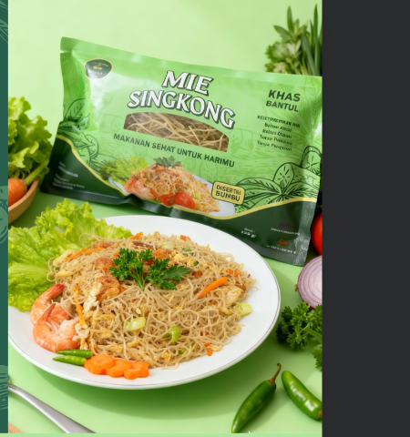

MIE RESHIK
CAP DOKAR
Makanan Sehat untuk Harimu
Mie sehat alami berbahan singkong asli nusantara. 100% bebas gluten, rendah gula, dan diproses semi-modern tanpa bahan kimia apapun.

Bukan Terigu, Tapi Singkong Asli Pilihan!
Tingginya konsumsi terigu berisiko memicu diabetes dan gangguan metabolik. Mie Dokar hadir sebagai karbohidrat kompleks alami pengganti mie instan terigu biasa.
100% Bebas Gluten
Aman untuk lambung penderita maag, GERD, celiac & autoimun.
Rendah Gula (Low GI)
Tidak memicu lonjakan gula darah mendadak, sangat aman untuk diabetes.
Kenyang Lebih Lama
Serat padat singkong menjaga energi stabil seharian tanpa kantuk.
Mesin Stainless Steel 304 Food Grade
Berbeda dengan produsen tradisional lainnya, Mie Reshik Cap Dokar diproses secara semi-modern menggunakan mesin baja tahan karat berstandar pangan tertinggi.
Mie Singkong Retail
(Disertai Bumbu)
Kini memasak mie sehat di rumah jadi semudah mie instan! Dilengkapi bumbu rempah alami gurih nikmat tanpa perlu repot meracik sendiri.
Losspack 5 Kg: Rahasia Dapur Kenyal & Laba Tebal
Dikhususkan untuk pengusaha warung bakmi Jawa, resto, kedai mie modern, katering, hingga hotel. Kenyal alami, tahan banting, dan tidak mudah lodoh di wajan panas.
- ✔ Bentuk: Untaian mie singkong padat kering
- ✔ Masa Simpan: 12 Bulan suhu ruang kering
- ✔ Suplai: Langsung dari pabrik tangan pertama
- ✔ Bimbingan Masak: Edukasi resep & takaran gratis
Dipercaya Oleh Mitra Bergengsi
Kualitas higienis dan cita rasa istimewa Mie Dokar telah lolos kurasi ketat industri perhotelan bintang dan penyedia pangan organik nasional.
Sertifikasi Lengkap & Terverifikasi
Mie Reshik Cap Dokar menjamin setiap kemasan yang beredar telah mengantongi izin resmi pemerintah, sertifikasi halal, dan perlindungan merek terdaftar.
Mari Tumbuh Bersama
Mie Reshik Cap Dokar
Terbuka kesempatan menjadi Mitra Kuliner (Warung/Resto), Reseller Kemasan, maupun Distributor Area dengan keuntungan maksimal dan pasokan stabil.